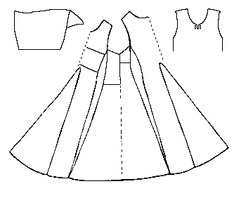

Pattern drawing based on N�rlundA short sleeved woman's dress made from a front and back piece with center gores, and two gores on the right side, and a single, wide gore on the left side with a false seam running down the center.
The sleeves are 30 cm (7.9") long, and the bottom is 360 cm (141.7") in circumference. The armhole is 58 cm (22.8") around, while the neck is 70.5 cm around. The waist measurement is 98.5 cm (38.8"). There is a 4.5 cm (1.77") slit in the front, with two pairs of edged eyelet holes. Both the neck and the bottom edge are turned back and sewn with a row of backstitches. The raw edge is overcast. The sleeve ends are simple turned over.
The material is full and heavy and well made. The weaving is "four-shaft", with the weft so firmly worked that the warp is no longer visible.
Go to Tunic Page; Herjolsnes Site Page
Some Clothing of the Middle Ages -- Tunics -- Herjolfsnes 39, by I. Marc Carlson, Copyright 1997 This code is given for the free exchange of information, provided the Author's Name is included in all future revisions, and no money change hands-